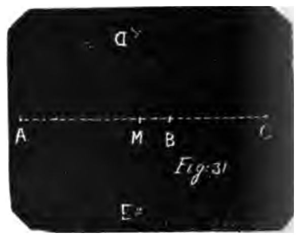
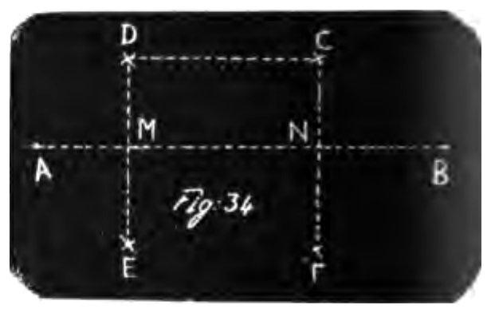

§§ 82–85: Collinearity, Right-Angle & Parallel Tests¶
82. Prob. To examine whether the three points \(A, B, C\) lie in a straight line (fig. 31).


Sol. With centers \(A\) and \(C\) and an arbitrary radius, for instance \(AC\), mark two arcs intersecting at \(D\) and \(E\). Observe whether \(DB = ED\). If so, the three points \(A, B, C\) are in a straight line; otherwise not.
Dem. If \(DB = EB\) as well, then angle \(DAB = EAB = \frac{1}{2} DAE\) (I.8), by reason of the equal sides in the two triangles \(DAB, EAB\). But in triangles \(DAC, EAC\) for the same reason angles \(DAC, EAC\) are equal, and therefore each is equal to half the angle \(DAE\). Hence \(DAB = DAC\), and thus the three points \(A, B, C\) lie in a straight line. If however \(DB\) be greater or less than \(EB\), angle \(DAB\) will also be greater or less than angle \(EAB\) (I.25), and hence cannot be equal to angle \(DAC\), since it cannot be equal
f. 0070 · p. 45to half the angle \(DAE\). Therefore the three points \(A, B, C\) cannot lie in a straight line.
83. Prob. Given the three points \(A, B, D\), to examine whether \(DA\) is perpendicular to \(AB\) (fig. 32).

Sol. Double \(AB\) at \(E\) (§ 64) by means of the semicircle \(BPQE\). Observe whether \(DB = DE\). If it is, the angle \(DAB\) is right; otherwise it is not.
Dem. Since the diameter \(BAE\) of the circle is a straight line, \(DA\) will make with it two angles whose sum is equal to two right angles (I.13). Then in the two triangles \(DAE, DAB\), which have sides \(AE, AB\) mutually equal and side \(AD\) common, if side \(DE\) be equal to side \(DB\), angle \(DAE\) will also be equal to angle \(DAB\) (I.8), and therefore both right angles. If however \(DE\) be greater or less than \(DB\), angle \(DAE\) will also be greater or less than angle \(DAB\); hence one will be acute and the other obtuse (I.25).
84. Prob. To examine whether the straight line passing through two given points \(D, F\) (fig. 33) is perpendicular to the straight line passing through two other given points \(A, B\).

Sol. By means of point \(D\), find the perpendicular \(DE\) to \(AB\) (§ 78). Examine whether the three points \(D, E, F\) lie in a straight line (§ 82). If so, \(DF\) is perpendicular to \(AB\); otherwise not.
Dem. Since \(DE\) is perpendicular by construction, if \(DF\) is so also, it will be the same straight line; because from a point \(D\) to a straight line \(AB\) two perpendiculars cannot be drawn (Coroll. I.32).
85. Prob. Given two points \(A, B\) of one straight line (fig. 34) and two \(C, D\) of another, to examine whether they are parallel.
Sol. Make \(AD = AE\), and \(BD = BE\) (§ 11). Likewise make \(AC = AF\), and \(BC = BF\). Observe whether \(DE = CF\);
f. 0071 · p. 46if so, they will be parallel; if not, they will converge toward the lesser side.


Dem. The lines \(DE, CF\) are perpendicular to \(AB\), and are bisected by it at two points \(M\) and \(N\) (§ 14). Therefore they are double respectively of the distances \(DM, CN\) of the points \(D\) and \(C\) from the straight line \(AB\). If then they are equal, the distances will be equal, and hence \(AB, DC\) parallel; otherwise they will converge.